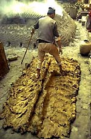
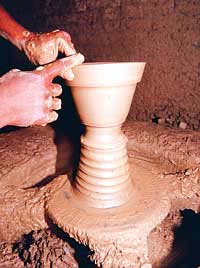
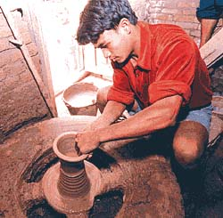
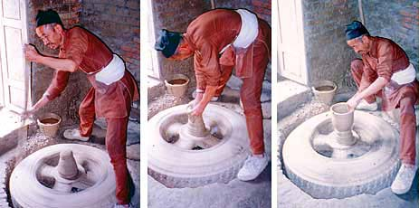
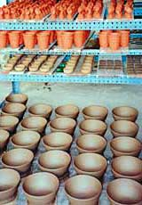
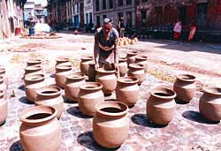

| Feats of Clay
Kathmandu Valley’s famous pottery has to change
with the times.
Article by Alexandra Alter
Originally published in the Nepali
Times.
Everyday
since he was a pint-sized 12-year-old, Tulisi Bahadur Prajapati
(ed. note: in the Newari language the surname means
'potter') has collected clay and kneaded it with his feet.
It's tiring, but nothing compared with what follows. Thimi's Prajapati
potter community doesn't use the elegant little wheels most of us
picture potters working with. They use old tyres filled with concrete
that weigh more than 300 kg (ed. note - probably
only up to 100 kg). Starting the wheels is so laborious,
it is the only aspect of pot-making that Thimi's women don't participate
in. The men turn these improvised wheels with a pole at a frenzied
pace until the tyre is spinning fast enough for them to throw two
or three pots in about five minutes. “It's incredible that
the pots are so symmetrical. They're thrown so quickly and the tyre
is so unstable and unpredictable,” says Ani Kastan, an American
potter who studied potting methods in Thimi. Larger pots, such as
the deodas used to store chhang, are first built up out of clay
coils and then beaten smooth with a paddle.
After
the pots are completed they are dried in the sun, then fired in
communal, makeshift kilns, that are built and destroyed every four
days. Pots from each workshop are taken to the town square, where
they are stacked up, covered with straw and ash, and then burned
in a kind of smoke firing. Smoke and ash billow through the town's
streets. Not surprisingly many Thimi residents have chronic lung
problems. When the fire subsides and the ash is swept away, the
pots are left to cool. It's common for over fifty percent of the
pots to be destroyed during the firing process. Those that survive
the firing are carried around to different villages in yokes and
are sold door-to-door. “My father used to walk all the way
from Thimi to Swoyambhu selling his pots,” Santa Kumar Prajapati
remembers. Today some potters have resorted to vehicles, but many
still sell their wares by travelling on foot.
Tulisi Bahadur, now in his seventies, may have entered
the family trade at the age of 12, but claims he learnt the art
of pottery at a much younger age. Like many of Thimi's children,
he began making pots as a toddler, playing with clay and imitating
his father. Today, he and his wife Chinimaya maintain his father's
pottery workshop on the first floor of their house, where they spend
long hours throwing pots.
But of their four children, only their daughter has
chosen to follow the family trade. Their three sons have moved to
Kathmandu to work as tailors and in knitting factories. Even their
daughter now works in her husband's workshop, leaving the couple
with no one to bequeath their studio to. “I had hoped that
all my children would become potters, but I didn't want to interfere
with their wishes,” says Tulisi Bahadur.
Nearly
all of Thimi's inhabitants, who belong to the Newar Prajapati caste
of potters, say their trade extends far back in their bloodlines.
But of the estimated 8,000 Prajapatis who live in the area surrounding
Thimi, only 2,000 claim that profession today. The others, like
Bahadur Prajapati's sons, have sought more lucrative work in Kathmandu
as bus drivers, waiters, or factory workers, leaving many family
pottery workshops without an heir.
The high rate of defection from the potter trade is
disconcerting, but by no means surprising. Potters all over Nepal
work extremely hard for little economic compensation. Most of the
potters in Thimi adhere to the arduous traditional methods in which
every aspect of pottery production is completed manually - from
mixing and drying the clay to powering the wheel. Of the roughly
1,000 workshops in Thimi, only four or five use modern potting technology
such as electrically powered wheels and kerosene-fuelled kilns.
Since they don't have enough land to grow their own
food, many potters walk to farms when rice and wheat are being harvested,
trading storage pots for grain. They make just enough profit to
survive on. “I go to Kathmandu to sell pots when I run out
of money,” explains Tulisi Bahadur. But even that is a challenge
today. Few Nepalis are interested in earthenware pots when they
can buy cheaper, longer-lasting mass-produced kitchenware made of
steel or plastic.
With such impediments to their livelihood, it's no
wonder that so many of Thimi's potters have forsaken their ancestral
vocation. “Pottery is a very difficult profession now. It's
hard work for little money,” says Santa Kumar Prajapati, who
owns Thimi Ceramics. Santa Kumar and his brother Laxmi Kumar realised
early on that the obstacles facing the Valley's potters in producing
and marketing their wares would only increase, and so in 1985 founded
Thimi Ceramics, one of the town's first modern workshops. Moving
with the times has allowed Santa Kumar and Laxmi Kumar to be innovative
- and remarkably productive. In addition to electric wheels and
pugging machines to mix clay, the brothers own one of few kerosene-fuelled
kilns in the area, which can fire up to 3,000 pieces of glazed ceramics
at a time. Unlike the unpredictable straw kilns used by most of
Thimi's potters, the temperature in the brick kiln is adjustable,
allowing the ceramics to first be fired at a low temperature and
then refired at 1,000 degrees after they have been glazed. The double-firing
technique melts the glaze and ensures that the ceramics are durable.
“Nepalis don't want to pay for handmade pots that break easily.
Potters need to find new methods,” believes Santa Kumar.

Retaining traditional procedures isn't always a bad
thing - as a tourist attraction at the Bhaktapur potters' square,
it is a definite plus. But Thimi's potters have a lot more incentive
to alter their archaic techniques - few tourists visit Thimi, and
those who do aren't likely to lug home an enormous water storage
vessel. But as Santa and Laxmi Kumar have discovered, traditional
and modern potting methods can be blended to yield a product as
aesthetically pleasing as it is practical. Combining classical designs
with modern glaze technology, the Kumar brothers constantly create
new models of tableware, garden ceramics, and decorative pieces
that quickly get snapped up by hotels, restaurants, and foreigners.
Their work is found at Hotel Yak & Yeti, Koto restaurant, and
Hotel Kido, and colourfully glazed coffee mugs from Thimi Ceramics
appear to be a staple in any expat's kitchen.
Bolstered
by the success of their own workshop, Santa Kumar and Laxmi Kumar
decided to bring other potters in the area up to speed. There have
been attempts to modernise Thimi's potting techniques in the past,
most notably by Jim Danish,
an American potter who lived in Thimi for nine years to teach more
expedient potting methods. Danish's most significant contribution
to modern Nepali ceramics was glaze technology, which he taught
Thimi's potters in 1980. More than just an aesthetic touch, glazing
serves important practical functions, making ceramics more durable
and hygienic. The red terracotta clay that Thimi potters use is
extremely porous, making it unsafe as kitchenware. Food and liquids
easily seep into the clay and remain there as fodder for bacteria.
Glazing provides a protective shield, and strangely enough, was
unknown in the Valley before Danish introduced it.
In 1984, Danish founded the Ceramics Production Project,
a German-sponsored organisation that provided training workshops
and sold raw materials relatively cheaply. Ten years later, however,
the project was bought up by the private sector and discontinued
the sale of materials to local potters. That's when Santa Kumar
and Laxmi Kumar started their own collective, the Nepal Ceramics
Co-operative Society, which now supplies materials for 14 pottery
workshops and 37 potters from Thimi and Bhaktapur. “You can't
get all ingredients for the glaze in Kathmandu. For flint, feldspar,
potash, quartz, and chromium oxide we have to go to India. We go
once a year and get enough materials for everyone in the collective,”
says Santa Kumar. The ingredients necessary for glazing would be
prohibitively expensive, as well as difficult for most potters to
obtain, but through the collective they can procure these materials
at a reasonable cost.
In
addition to providing the chemicals and minerals necessary for glaze,
the collective offers workshops for potters who want to learn new
techniques. Three months ago, a Swiss expert came to teach a new
glaze method at the collective. Though Nepal's ceramics are still
fathoms behind the rest of the world in most respects, the glazed
pottery produced here is technically superior to ceramics in Europe,
China, India, and America - it is lead-free and non-toxic.
Even today, Nepal's ceramic work has been eclipsed
by products from India and China, both of which can mass-produce
more durable stoneware. Kathmandu Valley potters have until now
been limited to the brittle red terracotta clay locally available
and found under the topsoil of rice fields. But members of the collective
are developing ways to introduce stoneware clay to pottery workshops
here. The research is expensive and requires imported Indian equipment.
Even the kerosene kiln operated by Santa Kumar and Laxmi Kumar is
unsuitable for stoneware firing, which requires a minimum temperature
of 1,280 degrees. At such a high temperature, the brick kiln would
melt, resulting in a huge gas explosion. At the collective, however,
a small high fire kiln has been constructed and is being used to
experiment with stoneware clay and new glazes.
If the research at the collective is successful, there
is hope that domestically produced pottery will one day supplant
foreign merchandise in the ceramic market. But Nepal's potters have
a long way to go before they'll be equipped to compete with Indian
imports. “To rival India, we need to be able to produce longer
lasting stoneware ceramics. We'll have to replace all our equipment,
and that's expensive,” says Santa Kumar. Such an undertaking
will require substantial capital investment and time, but for the
moment, the technical advances being made in workshops in Thimi
and Bhaktapur signal that a movement to reinvigorate Nepal's ceramic
work is underway. If nothing else, the Nepal Ceramics Cooperative
society is working to ensure that Kathmandu Valley's pottery tradition
won't decline further.
Article courtesy the Nepali Times. © Nepali
Times. 'Wedging' photo courstsy Jim
Danisch.
The
Thimi, Nepal Potters Community
More Articles
|